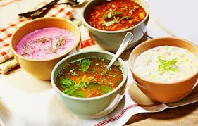

Супы

Супы
Суп - это общее название группы жидких кулинарных изделий, которые распространены в национальных кулинарных традициях разных стран мира. Главной особенностью супа считается то, что данное блюдо на 50% состоит из жидкости. Помимо того, суп готовят при помощи такого способа термической кулинарной обработки ингредиентов как варение. Еще одной особенностью блюда можно считать то, что подавляющее большинство видов супа готовят с использованием воды.
Исследователи утверждают, что рецептура современного супа была придумана около 500 лет тому назад. Это связано с тем, что ранее у людей не было посуды, подходящей для приготовления жидких кулинарных изделий на открытом огне. Однако, некоторые виды супов существовали и ранее, например в Китае первые блюда варили в глиняной, а также каменной посуде. Суп начал свое победоносное шествие по миру с Южной Европы примерно в XV столетии.
В настоящее время в общемировой кулинарной традиции насчитывают около 150 типов первых блюд, а также тысячи различных видов супов. Классифицировать виды такого блюда как суп достаточно сложно. Один и тот же суп можно отнести к нескольким группам. Среди основных групп супов можно выделить следующие наиболее популярные:
- горячие супы, т.е. блюда, которые подаются к столу теплыми (борщ, солянка);
- холодные супы (ботвинья, холодник);
- супы, которые могут подаваться как в горячем, так и холодном виде (гаспачо).
В зависимости от ингредиентов, которые используются в процессе приготовления блюда супы подразделяются на следующие группы:
- суп на воде;
- суп на бульоне;
- суп на пиве или вине;
- суп на квасе;
- суп на кисломолочных продуктах;
- суп на рассоле;
- суп на фруктовом соке.
Супы подразделяют на следующие группы в зависимости от разновидности основного ингредиента блюда:
- рыбные супы (уха);
- мясные супы (куриный суп);
- овощные супы (минестроне);
- супы из морепродуктов;
- грибные супы;
- супы с использованием крупы (рисовый суп);
- супы на основе водорослей (мисо-суп);
- молочные супы;
- фруктовые супы.
В зависимости от способа приготовления супы подразделяются на следующие группы:
- прозрачный суп (бульон);
- заправочный суп отличается наличием в рецептуре блюда свыше двух основных компонентов (солянка, рассольник);
- суп-пюре;
- загущенный суп, в процессе приготовления блюда используют муку и другие компоненты;
- комбинированный суп, т.е. блюдо в процессе приготовления которого используют несколько способов;
- обжарочные супы;
- сладкие супы.
Различные виды супов принято подавать к столу в специальной посуде. Суп могут разливать порционно по глубоким тарелкам и подавать каждому гостю в отдельности. Помимо того, суп подают в специальной супнице, каждый гость сам может при помощи черпака налить желаемое количество жидкого блюда. Суп относится к полезным блюдам, которые медики и диетологи рекомендуют употреблять в пищу для улучшения пищеварения даже в лечебно-профилактических целях.